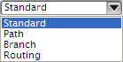

选择管线布置对象
在整个管线布置过程中，有些操作需要选择全部或部分管线布置对象。当需要选择管线布置对象时，选择条上将出现方法列表，比如当您选择信息→管线布置→管线布置对象时。

在这个列表中，您可以选择：
选择起始对象与终止对象之间的所有相连对象，并且也包含起始对象与终止对象。
分支是从其它管线部分分割出来的部分管线。当您选择分支线段时，NX 将会选择它以及所有在选定对象和分支终止点之间的相连管线对象。如果有多个分支可供选择，使用快速拾取列表来高亮显示您需要选择的分支。
选择一个对象后，将会包含所有成员对象，以及路径中的任何型材与部件。